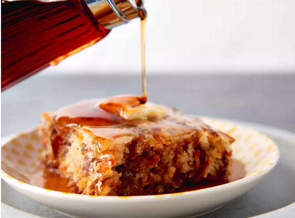

McGriddle Casserole

Ingredients
- Breakfast Sausage - 1 lb
- Bacon - 6 slices
- "Just Add Water" Pancake Mix - 3 cups
- Water - 2 cups
- Maple Syrup - 1/4 cup (plus some for serving)
- Shredded Cheddar Cheese - 1 1/2 cups
- Softened Butter - 2 Tbps
Directions
- Preheat the oven to 350 degrees F (175 degrees C). Lightly grease a 9x13-inch baking dish.
- Heat a large skillet over medium-high heat. Cook and stir sausage in the hot skillet until browned and crumbly, 5 to 7 minutes. Drain and discard grease. Set aside to cool slightly.
- Place bacon in a large skillet and cook over medium-high heat, turning occasionally, until evenly browned and crisp, about 10 minutes. Drain bacon slices on paper towels. Crumble when cool enough to handle.
- Whisk together pancake mix and water until well combined. Stir in maple syrup. Add sausage, bacon, and cheese and fold the mixture together until well incorporated. Pour mixture into prepared baking dish.
- Bake in the preheated oven until casserole is lightly browned, and a toothpick inserted near the center comes out clean, about 30 minutes.
- Spread butter over hot casserole and serve with extra syrup as desired.